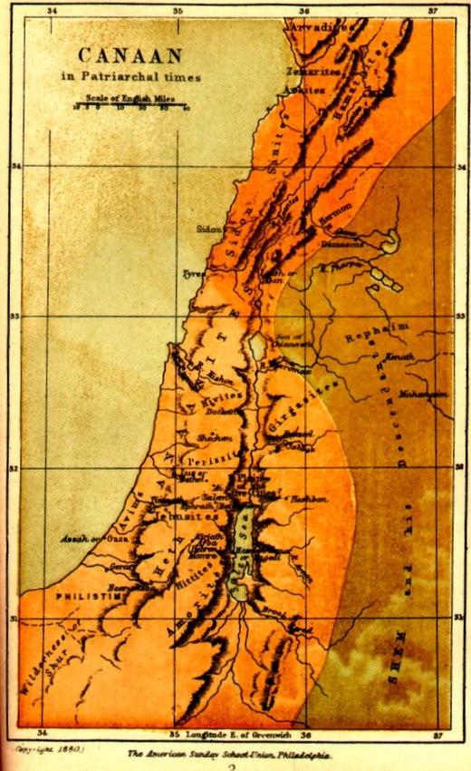
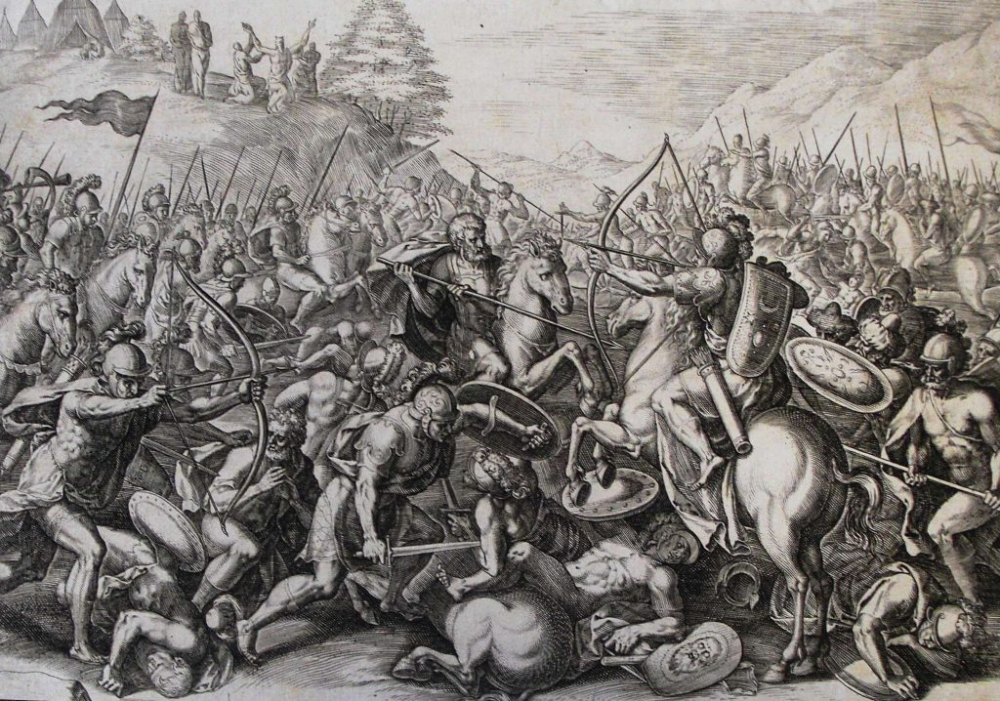

اهلا بكم في موقع don't forget ومن طبيعة الانسان ان ينسى نتمنى ان لاننسى القضية التي حارب من أجلها اجدادنا والقضية الإسلامية أولا والعربية ثانيا و الإنسانية ثالثا نتمنى ان نكون وسيلة تعليم للكبير والصغير والجاهل والمتعلم والمسلم والكافر.
موقع يشرح احداث القضية الفلسطنية و إحتلال الصهاينة للأرض واشهر نزاع موجود في عصرنا الحديث ولكن الحقيقة هو نزاع من قديم الأزل و أتمنى اننا نزيد من الوعي على قضية لها 76 سنة .
سنبدأ سرد الاحداث ليس من سبعه أكتوبر مثل (بيرس مورقن) في كل لقائاته بل سنبدأ من زمن بعيد قليلا لا هو بعيد كثيرا يعني من بعد طوفان سيدنا نوح عليه السلام!
قصة سيدنا نوح عليه السلام وما علاقتها بقصة بني اسرائيل
قصة طوفان نوح ووصول الكنعانيين وهم "العرب الآن" تاريخ البشرية يعود إلى آلاف السنين، حيث شهدت الأرض العديد من الأحداث الهامة والتغيرات الجذرية. واحدة من هذه الأحداث التاريخية المشهورة هي قصة طوفان نوح، التي تروى في العديد من الأديان والمصادر القديمة. تقول القصة إن الله قرر تدمير البشرية بسبب فسادها وظلمها، وأمر نوحًا ببناء سفينة لإنقاذ نفسه وعائلته وحيوانات الأرض. وفقًا للتقاليد الدينية، قام نوح ببناء السفينة وجمع زوجًا من كل نوع من الحيوانات للبقاء على قيد الحياة. وبعد ذلك، جاء الطوفان العظيم الذي غمر الأرض وأغرق الجميع باستثناء من كانوا على متن السفينة. استمر الطوفان لمدة أربعين يومًا وأربعين ليلة، حتى انحسرت المياه وتمكن نوح ومن معه من النجاة. بعد نهاية الطوفان، بدأت الحضارة البشرية من جديد. وتقول الأديان السماوية الثلاث - اليهودية والمسيحية والإسلام - أن البشرية الحديثة تنحدر من ثلاثة أبناء لنوح: سام وحام ويافث. ويرتبط الكنعانيون بنسبة إلى حام، الذي يُعتقد أنه أصبح جدًا لسبعة أبناء هم كنعان ومصر وكوش وفوط وميزرايم وفوط وكنعان. وفي وقت لاحق، انتقل الكنعانيون إلى فلسطين، واستوطنوا في تلك المنطقة. وقد ازدهرت حضارتهم في فلسطين وأصبحت واحدة من الحضارات البارزة في المنطقة. وتميزت حضارة الكنعانيين بالتجارة والزراعة والفنون والعمارة. من الجدير بالذكر أن الكنعانيين لم يتركوا سجلاً تاريخيًا مكتوبًا عن حضارتهم، لذلك يعتمد المؤرخون والعلماء على الأدلة الأثرية والنصوص القديمة لفهمهم ودراسة حضارتهم. ومن الأدلة المهمة على وجود الكنعانيين في فلسطين تشمل الآثار المكتشفة في المواقع الأثرية مثل عكا وجبل الجرمق وغيرها من المواقع.
نسل بني اسرائيل.
وننتقل بعدها لعام 1800 ق م حيث عهد سيدنا إبراهيم عليه السلام وقصته المعروفة مع النمرود وبعد الاحداث مع النمرود هاجر سيدنا إبراهيم عليه سلام من العراق الى كنعان وعاش باقي حياته.
وكان من نسل سيدنا إبراهيم إسحاق وإسماعيل عليهما السلام وذهب إسماعيل عليه السلام الى جزيرة العرب وبقى إسحاق عليه السلام في ارض كنعان وجاء من ذريته يعقوب عليه سلام واتفق المفسرون ان يعقوب عليه سلام هوا إسرائيل الذي ذكر في قرأن وبهذا نعرف ان بني إسرائيل سمو ببنو إسرائيل لأنهم من نسل سيدنا يعقوب عليه السلام.
الله سبحان و تعالى رزق سيدنا يعقوب بيوسف عليه السلام وقصة غيرة أبناء يعقوب عليه سلام من اخيهم يوسف عليه السلام وتمر سنين ويصبح سيدنا يوسف وزيرآ في مصر وذهبو اليه اخوته وذهب معهم سيدنا يعقوب عليه السلام وعاشو بني إسرائيل وذريتهم 430 سنة وعاشو في ارض جاسان المعروفة بوادي الطيملات وعاشو بني إسرائيل في ذالك الفترة ربا وقتل وفتن وفساد وكان سكان مصر الأصليين يكرهوهم بسبب خيانتهم وفاسدهم في الأرض وكان فرعون يحاول ان يقضي عيلهم.
مجيئ سيدنا موسى عليه سلام.
ومجيئ سيدنا موسى عليه سلام لكي يهدي بني إسرائيل للطريق الصحيح ويدعوهم لعبادة الله سبحان وتعالى ولكن كان هناك من لم يعجبه رسالة سيدنا موسى عليه سلام وهو فرعون الذي كان يدعو الناس لعبادته وبعدها حصلت معجزة انشقاق البحر في القصة المعروفة بعد ان الله سبحان وتعالى انقذ سيدنا موسى ومن اتبعه من بني إسرائيل وأهلك فرعون و أغرقه وهذه الاحداث كانت 1300 ق م.
سورة البقرة [50] قوله تعالى: {وَإِذْ فَرَقْنَا بِكُمُ الْبَحْرَ فَأَنْجَيْنَاكُمْ وَأَغْرَقْنَا آلَ فِرْعَوْنَ وَأَنْتُمْ تَنْظُرُونَ}
وبعد معجزة البحر امر الله سبحان وتعالى موسى عليه سلام ان يذهب هوا وبني إسرائيل الى منطقة كنعان ويحاربو العماليق
ولكن من هم العماليق
العماليق او العمالقة هي امة من ذرية عمليق بن لاوذ بن ارم بن سام بن نوح وهذا شعب قد عاصر عدد من الأنبياء وعاشو في شبه الجزيرة العربية ويقول البعض ان العمالقة مجموعة من العموريين وقد وصفو بأنهم بدو ورحل ويطلق عليهم أحيانا اسم (الكنعايين الشرقيين) حيث كانو يتحدثون نفس اللغة مع وجود فرق في اللهجة بين العموريين والكنعايين ولغتهم هي أيضا قريبة من اللغة العربية وكانو يسمون عماليق لانهم بلفعل كانو عمالقة واقوياء .
واعتقد انك عندما قرأت ثلاثة سطور عن العماليق ستعرف ماهي ردة فعل بني إسرائيل عندما امرهم الله سبحان وتعالى محاربة العماليق بتأكيد سوف يخشون محاربتهم وهذا كان رد بني إسرائيل كما ورد في القرأن عندما امرهم الله سبحان وتعالى دخول الحرب